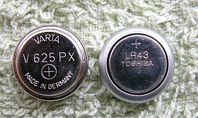
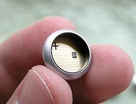

更新：2006/2/13
老相機電池對照表
由於法令的限制，不准製造以水銀為原料的電池，現在要買新的水銀電池是不太可能的了。
水銀電池的停產，衝擊最大的莫過於照相器材， 還好電池廠商大以鹼性電池取代原本停產的的水銀電池型號，這類電池多半會在後面加上A字，如
PX625A、386A等等（代表 alkaline），對老相機不至有太大影響。

左邊為停產的 PX625 水銀電池，右邊是模擬 PX625 的電池轉接器，將
LR43 裝入後，就等於 1.35V 的 PX625 水銀電池。（註 一）

這就是 PX625 電池轉接器，裝上很容易買到的 LR43
電池（1.5V）之後，就是不折不扣的 PX625，電壓會變成水銀電池的 1.35V。
順便一提，電池種類簡易的辨別方法：LR開頭多為鹼性電池（alkaline）、SR開頭多為氧化銀電池（silver
oxide），CR開頭多為鋰電池（lithium），不過並沒有使用鋰電池的老相機，因為那個年代還沒有鋰電池。
不過有些水銀電池雖有替代電池的推出，而在台灣沒有進口或很稀少，也等於是沒有。
找不到與原停產電池尺寸相同的電池，只好找尋體積相近的電池，或自己改裝。
改裝方法都非常簡單，不必專業技術，所用到的材料不外乎食品用鋁薄紙、沒電的電池、膠帶、雙面膠泡綿這類東西來增加電池體積或製造假電池，目的就要讓新電池在電池室內能通電，並注意要可以取出，不要卡住拿不出來就行了。（註
一）
在台灣，PX625A、LR44、LR43、4LR44 都是非常容易買到的電池（註二），所以，只要你的老相機可以用這些電池取代原有的水銀電池的話，就不用擔心
。否則，你只好自己利用相近的電池組成一組，或是不要買這種沒有替代電池的老相機。
水銀電池（mercuric oxide）、氧化銀電池（silver oxide）、和鹼性電池（alkaline）有哪些關鍵差別呢？
氧化銀電池的放電特性與水銀電池最為接近，電壓可以持續到耗盡前還可維持穩定，鹼性電池則隨著電量消耗而電壓逐漸下降，所以使用鹼性電池（如LR44）為替代品的話，一年左右更換一次電池，不必等電力耗盡，可以避免電出現壓過低的現象。
氧化銀電池電壓穩定、對溫度不敏感、使用時間長，所以一些精密儀器上（如手錶）會使用這類電池。
水銀與鹼性電池電壓的不同會不會造成相機內測光表不準？我認為在我們日常的拍照環境下沒有差別，我在照片上看不出 這零點多伏特的影響。
使用替代電池，我認為依舊使用與軟片相同的ISO設定即可，除非你的測光元件已經老化、或是需要清理保養，零點多伏特的差別不會讓你的照片產生嚴重的曝光誤差。
二、三十年前的相機，都是使用「Cds」這種感光元件當測光表的核心，這
老式的光敏電阻對光線變化天生遲鈍，加上會隨時間而老化，古時候沒有其他技術，不得不用，當 SPD 跟更進步的 CCD 感光元件問世以後，Cds
這種古老 玩意兒就不用在照相機上了。
一點的誤差是沒有關係的，重要的是結果。拍出的照片有沒有曝光錯誤，如果曝光錯誤，很可能是機器需要做洗油保養了。
我認為電源不是關鍵。
軟片本身也有寬容度存在，負片的寬容度更廣，而且專業的相機修理店也是以1.5V電池檢查你的測光系統，所以不需要過於在意電壓的差別。
如果你相機所拍出的影像，必須調整 ISO才能正常的話，建議最好做一次測光系統的檢查或是調校（註
三），很可能是測光系統本身就已經不準確了，而不是電池電壓的問題。
如果你的相機一直都會有曝光不足的現象，建議將ISO值降低一格來測試，測試是否可以改善。降低後仍不能改善，可能和測光系統老化有關係，可以送去專業的老相機保養店做測試或調整。
不過，有些相機修理店不願意收這類測光有問題的老機器。因為，功夫花得多，但利潤少，擋到了修其他機器的進度，或在他的認知裡，這種機器不值得修。
玩家跟店家對「價值」的看法，有時是有非常大的差距的。
電池的型號會因為生產廠商的不同而不同，雖然他們都是完全一模一樣的東西，例如 PX625這一款水銀電池，在金頂電池（Duracell）是 PX625，而在
柯達卻是KX625，在ICE又是叫MR-9。
電池型號有上千種，我沒辦法記住這麼多，在下面的電池對照表中，我只列出常見的老相機所用的，或與手冊中會提到的電池型號。
有些型號的氧化銀電池（SR），雖然沒有停產，但在台灣一般販賣電池的通路上也不是常見到，像 4SR44、SR44 等。
而有些大量用在手錶上的氧化銀電池反而在雜貨店、唱片行都可以買到。
◎電池對照表-1
世界上的相機型號非常多，我沒有辦法全部了解，我只寫出在台灣較常見到的老相機所使用的電池型號。
�� 有替代電池，但在台灣很難找，可能沒進口。（註四）
�� 已經停產，在台灣很難找到替代電池。
*2 表示需要兩顆電池、*3 表示三顆，依此類推
| 相機 |
使用電池 |
替代電池 |
| AGFA 1535 |
PX625A*3 |
-- |
| Canon A35
Datelux |
PX625*2 |
PX625A*2 |
| Canon A35F |
PX625 |
PX625A |
| Canon A-1 |
4LR44、4SR44 |
4LR44、4SR44 |
| Canon AE-1 |
4LR44、4SR44 |
4LR44、4SR44 |
| Canon AT-1 |
4LR44、4SR44 |
4LR44、4SR44 |
| Canon AV-1 |
4LR44、4SR44 |
4LR44、4SR44 |
| Canon AE-1
Program |
4LR44、4SR44 |
4LR44、4SR44 |
| Canon
CANODATE E |
PX640*2 |
PX640A*2 |
| Canon
Canonet QL17、19、28系，GIII 17、19系 |
PX625 |
PX625A |
| Canon
Datematic |
PX640*2 |
PX640A*2 |
| Canon DEMI
EE17 |
PX625 |
PX625A |
| Canon
EX-Auto |
H-D
PX625 |
PX625A |
| Canon
Dial35 |
PX1 |
PX1A |
| Canon
FT、FTb、FTb-N |
PX625 |
PX625A |
| Canon
FX、FT、FP |
PX625 |
PX625A |
| CHINON 35 EE |
PX675 |
LR44 |
| CHINON
35 EE II |
PX640 |
PX640A |
| Konica Auto
S、S1、S2 |
PX625 |
PX625A |
| Konica Autoreflex
TC系 |
PX625 |
PX625A |
| Konica C35 |
PX675 |
LR44 |
Konica C35
Automatic
（Konica C35 Flashmatic） |
PX675 |
LR44 |
Konica C35
E&L
（Konica C35V） |
PX675 |
LR44 |
Konica
C35FD
（Konica Auto S3） |
PX675 |
LR44 |
| Konica
C35EF |
PX675 |
LR44 |
| Konica
C35EFD |
LR44 |
LR44 |
| Minolta
Hi-Matic 7、7s、9、11 |
PX625 |
PX625A |
| Minolta
Hi-Matic 7sII |
PX675 |
LR44 |
| Minolta Hi-Mactic E |
PX640*2 |
PX640A*2 |
| Minolta Hi-Mactic F |
PX640*2 |
PX640A*2 |
| Minox
C、EC、ECX、LX、TLX |
PX27 |
4SR43、
PX27S |
| Minox
35EL、35GL、35GT、35GSE、35GTE、35GTX、35PL 、35PE、35AL |
PX27 |
4SR43、
PX27S |
| Minolta SRT
100,101,102, Super |
PX625 |
PX625A |
| Minolta SRT
200,201,202, Super |
PX625 |
PX625A |
| Nikon T、TN、FTN
finder |
PX625 |
PX625A |
| Nikon Nikkormat
FT、FTN |
PX625 |
PX625A |
| Nikon Nikkormat
FT2 |
PX625 |
PX625A |
| Olympus 35EC |
PX640*2 |
PX640A*2 |
| Olympus 35EC2 |
PX640*2 |
PX640A*2 |
| Olympus
35SP |
PX625 |
PX625A |
| Olympus
35RC |
PX625 |
PX625A |
| Olympus OM-1、OM1N、OM1
MD |
PX625 |
PX625A |
| OLympus 35
LC、SC、SP-N、RD、UC、DC、DC-N |
PX625 |
PX625A |
| Olympus Pen
FT、FTL |
PX625 |
PX625A |
| Olympus PEN
EED |
PX625 |
PX625A |
| Olympus
XA、XA2、XA3、XA4 |
SR44、LR44 |
4LR44、4SR44 |
| Ricoh 500G |
PX675 |
LR44 |
| Ricoh 35ZF |
PX675 |
LR44 |
| Rollei
35TE、35SE、A110、35LED |
PX27 |
4SR43、
PX27S |
| Yashica
Electro 35 GT、GS、GSN、GTN |
HM-4N |
PX32A
註一 |
| Yashica Electro
35CC、CCN、MC |
4LR44 |
4LR44 |
| Yashica Electro 35GL |
HM-4N |
PX32A |
| Yashica Electro 35GX |
HM-N*2 |
PX640*2 |
| Yashica MG-1 |
HM-4N |
PX32A |
從上表你可以很清楚的看出來，若原是採用PX625、PX675水銀電池的機種，都有容易買到的PX625A或LR44可以代替。
淺藍色區域內的相機，他們所用的電池在台灣不是非常普遍的電池商品，若買不到只好對電池室進行改裝或是改裝現有可買到的電池，讓這些電池可以穩固的裝入電池室。
有些相機原本就不是採用水銀電池（如 Canon AE-1系、Olympus
XA系）所以這類機器就沒有買不到電池的問題，你可放心的買下這類器材。
◎電池別名表
下表是電池的別名型號，粗體字是該電池較常看到的其他稱呼型號。
由於製造商的不同，明明是同款的電池，但型號卻一大堆，常讓人誤以為是不同的電池，型號名稱可說是相當混亂，因此我製作此表，方便對照。
只要是「水銀」電池，目前已全部停產。
| 型號 |
屬性 |
電壓 |
別名型號 |
備註 |
4SR43
(PX27S) |
氧銀 |
6v |
PX27S、S27PX、RPX27S、4SR43 |
PX27系列替代品 |
| 4LR44 |
鹼性 |
6v |
PX28A、A544、K28A、V34PX、7H34、4NZ13、V4034PX、4034PX、PX28AB、1414A
|
尺寸同4SR44，可與4SR44互替 |
| 4SR44 |
氧銀 |
6.2v |
4G13、V28PX、PX28、544、KS28、RPX28、1406SOP |
尺寸同4LR44，可與4LR44互替 |
| PX1 |
水銀 |
1.35v |
MR50、H-P |
停產，PX1A取代 |
| PX1A |
鹼性 |
1.5v |
LR50、1A、A1PX、1100A、PC1A |
MR50、
PX1替代品，註五 |
| PX27 |
水銀 |
5.6v |
EPX27、V27PX、4NR43、KX27、HS3C |
以4SR43為替代品，Minox 和Rollei許多款相機都是用PX27系的電池
|
PX32
(HM-4N) |
水銀 |
5.6v |
PX32、164、TR164、E164、V164、4NR52、V164PX |
停產 |
| PX32A |
鹼性 |
6v |
V32PXA、A32PX、TR164A、EN164A、PC164A |
HM-4N的替代電池，註五 |
| LR43 |
鹼性 |
1.5v |
186、G12A、1176A、186-1、RW84、V12GA、GP86A、L1142、301A、386A |
尺寸同SR43，可與SR43互替 |
| LR44 |
鹼性 |
1.5V |
PX675A、PX76A、G13A、LR1154、L1154、RPX675、D76A、V13GA、GPA76、1128MP、1166A、S76 |
尺寸同SR44，可與SR44戶替 |
PX625
(H-D) |
水銀 |
1.35v |
MR9、H-D、PX13 |
停產，以PX625A或S625PX代替 |
| PX625A |
鹼性 |
1.5v |
LR09、LR9、V625U、P625U、D625、EPX625G、KA625、RPX625A、EPX625BP
|
用來代替PX625水銀電池 |
| MRB625 |
空鋅 |
1.35v |
|
用來代替PX625，註五 |
PX640
(HM-N) |
水銀 |
1.35v |
HM-N、NR52、MR52、EPX640、V640PX、1125M |
停產，PX640A代替 |
| PX640A |
鹼性 |
1.5v |
A640PX、PC640A、LR52、EN640A、EPX640A、1126A |
取代PX640，註五 |
PX675
(H-C) |
水銀 |
1.35v |
MR44、H-C |
可以LR44代用 |
| S625PX |
氧銀 |
1.55v |
SR09、PX625S、RPX625S、V625U、EPX625BP |
也是PX625的替代品 |
SR43
(H) |
氧銀 |
1.55v |
386、V386、SR43W、H、260、280-41、SB-B8、SR1142、SP386、G12、S07 |
尺寸同LR43，可與LR43互替 |
| SR44 |
氧銀 |
1.55v |
SR44W、SR44H、D303、D357、D303、357、GS13、228、357、280-62、J、SB-B9、SR1154、、541、SP357、V357、4276、KS76、280-8、SR76E、1131SO |
尺寸同LR44，可與LR44互替 |
註一：
Yashica Electric 35系列與原來形式完全相同的電池不好找，請參考我在 Yashica
Electro 35GSN這篇文章中的介紹
你可以從國外網站郵購 Yashica Electro35系列專用的電池轉換器，透過這個轉換器，就可以使用很容易買到的
4LR44電池了，但加上國際運費後的價格不便宜。
我的電池轉接器都是購自 C.R.I.S 網站。
Criscam.com Mercury Battery Adapters：
http://www.criscam.com/mba.htm
你也可以詢問台北的「四海相機」他們那邊可能會找得到這類電池轉換器，四海相機網址：
http://www.suhaiphoto.com.tw/
註二：
PX625A、4LR44、LR44 這些是普遍的電池，在照相器材店、光華商場、或專賣電子零件的賣場都可以買到，而
LR44更容易買到，這是一種很普通的鈕扣型電池，很多計算機、小鬧鐘都是用 LR44。
註三：
老相機修理、保養的專業店：台北有四海相機、全泰相機，在台中有老賴相機，都是對老器材很有經驗的修理店。
老賴相機：http://www.laolai.idv.tw/
四海相機：http://www.suhaiphoto.com.tw/
註四：
我是以台灣台北市照相器材行、大型電子材料行、醫療、鐘錶、唱片行、量販店作為購買難易度的調查根據。
我並不知道在台北市以外的問何地方，這些電池是否可以容易買到。我這裡所列出不容易買到的電池，也許在你的國家、你所居住的地區要買到並不困難。
我建議你，以你當地可以輕鬆容易買到的電池，作為你挑選購買老相機時的一個條件。
註五：
這些標示為「註五」的電池，我在台北市還沒發現過。